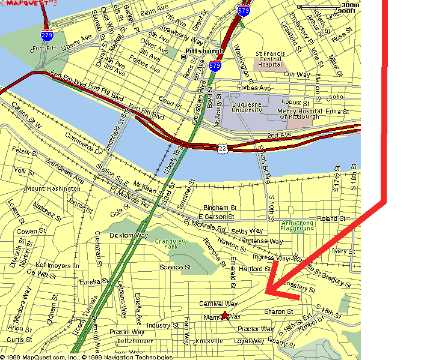

|
|
830 E Warrington, Pittsburgh, PA 1510 -- Corner of E Warrington and Arlington
| There was also available textual directions on how to get to the hostel from the airport, the bus station, and the train station via car, bike, or foot. |
"To provide inexpensive educational travel, intercultural understanding, and an understanding of the natural environment through hostels, hostelling, and outdoor recreation."
Pittsburgh Council | Activities Program | Comments/Questions
Page was last updated January 21, 2006